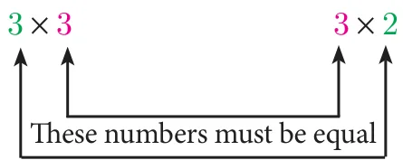

- If \(A = \begin{pmatrix} 1 & 9 \\ 3 & 4 \\ 8 & -3 \end{pmatrix}\), \(B = \begin{pmatrix} 5 & 7 \\ 3 & 3 \\ 1 & 0 \end{pmatrix}\) then verify that
- \(A + B = B + A\)
- \(A + (-A) = (-A) + A = O\).
- If \(A = \begin{pmatrix} 4 & 3 & 1 \\ 2 & 3 & -8 \\ 1 & 0 & -4 \end{pmatrix}\), \(B = \begin{pmatrix} 2 & 3 & 4 \\ 1 & 9 & 2 \\ -7 & 1 & -1 \end{pmatrix}\) and \(C = \begin{pmatrix} 8 & 3 & 4 \\ 1 & -2 & 3 \\ 2 & 4 & -1 \end{pmatrix}\) then verify that \(A + (B + C) = (A + B) + C\).
- Find \(X\) and \(Y\) if \(X + Y = \begin{pmatrix} 7 & 0 \\ 3 & 5 \end{pmatrix}\) and \(X - Y = \begin{pmatrix} 3 & 0 \\ 0 & 4 \end{pmatrix}\)
- If \(A = \begin{pmatrix} 0 & 4 & 9 \\ 8 & 3 & 7 \end{pmatrix}\), \(B = \begin{pmatrix} 7 & 3 & 8 \\ 1 & 4 & 9 \end{pmatrix}\) find the value of (i) \(B - 5A\) (ii) \(3A - 9B\)
- Find the values of \(x,\ y,\ z\) if
- \(\begin{pmatrix} x - 3 & 3x - z \\ x + y + 7 & x + y + z \end{pmatrix} = \begin{pmatrix} 1 & 0 \\ 1 & 6 \end{pmatrix}\)
- \(\begin{pmatrix} x & y - z & z + 3 \end{pmatrix} + \begin{pmatrix} y & 4 & 3 \end{pmatrix} = \begin{pmatrix} 4 & 8 & 16 \end{pmatrix}\)
- Find \(x\) and \(y\) if \(x\begin{pmatrix} 4 \\ -3 \end{pmatrix} + y\begin{pmatrix} -2 \\ 3 \end{pmatrix} = \begin{pmatrix} 4 \\ 6 \end{pmatrix}\)
- Find the non-zero values of \(x\) satisfying the matrix equation
\(x\begin{pmatrix} 2x & 2 \\ 3 & x \end{pmatrix} + 2\begin{pmatrix} 8 & 5x \\ 4 & 4x \end{pmatrix} = 2\begin{pmatrix} x^2 + 8 & 24 \\ 10 & 6x \end{pmatrix}\)
- Solve for \(x,\ y\) : \(\begin{pmatrix} x^2 \\ y^2 \end{pmatrix} + 2\begin{pmatrix} -2x \\ -y \end{pmatrix} = \begin{pmatrix} 5 \\ 8 \end{pmatrix}\)
Multiplication of Matrices
To multiply two matrices, the number of columns in the first matrix must be equal to the number of rows in the second matrix. Consider the multiplications of 3×3 and 3×2 matrices.

\(\text{(Order of left hand matrix)} \times \text{(order of right hand matrix)} \to \text{(order of product matrix)}.\)
\((3 \times 3) \qquad\qquad (3 \times 2) \qquad \to \qquad (3 \times 2)\)
Matrices are multiplied by multiplying the elements in a row of the first matrix by the elements in a column of the second matrix, and adding the results.
For example, product of matrices
\(\begin{pmatrix} a & b \\ c & d \\ e & f \end{pmatrix} \times \begin{pmatrix} g & h & i \\ k & l & m \end{pmatrix} = \begin{pmatrix} ag + bk & ah + bl & ai + bm \\ cg + dk & ch + dl & ci + dm \\ eg + fk & eh + fl & ei + fm \end{pmatrix}\)
The product \(AB\) can be found if the number of columns of matrix \(A\) is equal to the number of rows of matrix \(B\). If the order of matrix \(A\) is \(m \times n\) and \(B\) is \(n \times p\) then the order of \(AB\) is \(m \times p\).
Properties of Multiplication of Matrix
(a) Matrix multiplication is not commutative in general
If \(A\) is of order \(m \times n\) and \(B\) of the order \(n \times p\) then \(AB\) is defined but \(BA\) is not defined. Even if \(AB\) and \(BA\) are both defined, it is not necessary that they are equal. In general \(AB \neq BA\).
(b) Matrix multiplication is distributive over matrix addition
- If \(A,\ B,\ C\) are \(m \times n\), \(n \times p\) and \(n \times p\) matrices respectively then \(A(B + C) = AB + AC\) (Right Distributive Property)
- If \(A,\ B,\ C\) are \(m \times n\), \(m \times n\) and \(n \times p\) matrices respectively then \((A + B)C = AC + BC\) (Left Distributive Property)
(c) Matrix multiplication is always associative
If \(A,\ B,\ C\) are \(m \times n\), \(n \times p\) and \(p \times q\) matrices respectively then \((AB)C = A(BC)\)
(d) Multiplication of a matrix by a unit matrix
If \(A\) is a square matrix of order \(n \times n\) and \(I\) is the unit matrix of same order then \(AI = IA = A\).
Note
- If \(x\) and \(y\) are two real numbers such that \(xy = 0\) then either \(x = 0\) or \(y = 0\). But this condition may not be true with respect to two matrices.
- \(AB = 0\) does not necessarily imply that \(A = 0\) or \(B = 0\) or both \(A, B = 0\)
Illustration
\(A = \begin{pmatrix} 1 & -1 \\ -1 & 1 \end{pmatrix} \neq 0 \quad\text{and}\quad B = \begin{pmatrix} 1 & 1 \\ 1 & 1 \end{pmatrix} \neq 0\)
\(\text{But}\quad AB = \begin{pmatrix} 1 & -1 \\ -1 & 1 \end{pmatrix} \times \begin{pmatrix} 1 & 1 \\ 1 & 1 \end{pmatrix} = \begin{pmatrix} 1 - 1 & 1 - 1 \\ -1 + 1 & -1 + 1 \end{pmatrix} = \begin{pmatrix} 0 & 0 \\ 0 & 0 \end{pmatrix} = 0\)
Thus \(A \neq 0,\ B \neq 0\) but \(AB = 0\).
Example 3.67
If \(A = \begin{pmatrix} 1 & 2 & 0 \\ 3 & 1 & 5 \end{pmatrix}\), \(B = \begin{pmatrix} 8 & 3 & 1 \\ 2 & 4 & 1 \\ 5 & 3 & 1 \end{pmatrix}\), find \(AB\).
Solution
We observe that \(A\) is a \(2 \times 3\) matrix and \(B\) is a 3×3 matrix, hence \(AB\) is defined and it will be of the order 2 × 3.
\(\text{Given}\quad A = \begin{pmatrix} 1 & 2 & 0 \\ 3 & 1 & 5 \end{pmatrix}_{2 \times 3},\quad B = \begin{pmatrix} 8 & 3 & 1 \\ 2 & 4 & 1 \\ 5 & 3 & 1 \end{pmatrix}_{3 \times 3}\)
\(\begin{aligned} AB &= \begin{pmatrix} 1 & 2 & 0 \\ 3 & 1 & 5 \end{pmatrix} \times \begin{pmatrix} 8 & 3 & 1 \\ 2 & 4 & 1 \\ 5 & 3 & 1 \end{pmatrix} \\ &= \begin{pmatrix} 8 + 4 + 0 & 3 + 8 + 0 & 1 + 2 + 0 \\ 24 + 2 + 25 & 9 + 4 + 15 & 3 + 1 + 5 \end{pmatrix} = \begin{pmatrix} 12 & 11 & 3 \\ 51 & 28 & 9 \end{pmatrix} \end{aligned}\)
Example 3.68
If \(A = \begin{pmatrix} 2 & 1 \\ 1 & 3 \end{pmatrix}\), \(B = \begin{pmatrix} 2 & 0 \\ 1 & 3 \end{pmatrix}\) find \(AB\) and \(BA\). Verify \(AB = BA\)?
Solution
We observe that \(A\) is a \(2 \times 2\) matrix and \(B\) is a \(2 \times 2\) matrix, hence \(AB\) is defined and it will be of the order \(2 \times 2\).
\(AB = \begin{pmatrix} 2 & 1 \\ 1 & 3 \end{pmatrix} \times \begin{pmatrix} 2 & 0 \\ 1 & 3 \end{pmatrix} = \begin{pmatrix} 4 + 1 & 0 + 3 \\ 2 + 3 & 0 + 9 \end{pmatrix} = \begin{pmatrix} 5 & 3 \\ 5 & 9 \end{pmatrix}\)
\(BA = \begin{pmatrix} 2 & 0 \\ 1 & 3 \end{pmatrix} \times \begin{pmatrix} 2 & 1 \\ 1 & 3 \end{pmatrix} = \begin{pmatrix} 4 + 0 & 2 + 0 \\ 2 + 3 & 1 + 9 \end{pmatrix} = \begin{pmatrix} 4 & 2 \\ 5 & 10 \end{pmatrix}\)
Therefore, \(AB \neq BA\).
Example 3.69
If \(A = \begin{pmatrix} 2 & -2\sqrt{2} \\ \sqrt{2} & 2 \end{pmatrix}\) and \(B = \begin{pmatrix} 2 & 2\sqrt{2} \\ -\sqrt{2} & 2 \end{pmatrix}\). Show that \(A\) and \(B\) satisfy commutative property with respect to matrix multiplication.
Solution
We have to show that \(AB = BA\)
\(\begin{aligned} \text{LHS} = AB &= \begin{pmatrix} 2 & -2\sqrt{2} \\ \sqrt{2} & 2 \end{pmatrix} \times \begin{pmatrix} 2 & 2\sqrt{2} \\ -\sqrt{2} & 2 \end{pmatrix} \\ &= \begin{pmatrix} 4 + 4 & 4\sqrt{2} - 4\sqrt{2} \\ 2\sqrt{2} - 2\sqrt{2} & 4 + 4 \end{pmatrix} = \begin{pmatrix} 8 & 0 \\ 0 & 8 \end{pmatrix} \end{aligned}\)
\(\begin{aligned} \text{RHS} = BA &= \begin{pmatrix} 2 & 2\sqrt{2} \\ -\sqrt{2} & 2 \end{pmatrix} \times \begin{pmatrix} 2 & -2\sqrt{2} \\ \sqrt{2} & 2 \end{pmatrix} \\ &= \begin{pmatrix} 4 + 4 & -4\sqrt{2} + 4\sqrt{2} \\ -2\sqrt{2} + 2\sqrt{2} & 4 + 4 \end{pmatrix} = \begin{pmatrix} 8 & 0 \\ 0 & 8 \end{pmatrix} \end{aligned}\)
Hence LHS = RHS (ie) \(AB = BA\)
Note
- If \(A\) and \(B\) are any two non zero matrices, then \((A + B)^2 \neq A^2 + 2AB + B^2\).
- However if \(AB = BA\) then \((A + B)^2 = A^2 + 2AB + B^2\)
Example 3.70
Solve \(\begin{pmatrix} 2 & 1 \\ 1 & 2 \end{pmatrix}\begin{pmatrix} x \\ y \end{pmatrix} = \begin{pmatrix} 4 \\ 5 \end{pmatrix}\)
Solution
\(\begin{pmatrix} 2 & 1 \\ 1 & 2 \end{pmatrix}_{2 \times 2} \times \begin{pmatrix} x \\ y \end{pmatrix}_{2 \times 1} = \begin{pmatrix} 4 \\ 5 \end{pmatrix}\)
\(\text{By matrix multiplication}\quad \begin{pmatrix} 2x + y \\ x + 2y \end{pmatrix} = \begin{pmatrix} 4 \\ 5 \end{pmatrix}\)
\(\begin{aligned} \text{Rewriting}\quad 2x + y &= 4 && \ldots(1) \\ x + 2y &= 5 && \ldots(2) \end{aligned}\)
\((1) - 2 \times (2) \Rightarrow\quad \begin{array}{rl} 2x + y &= 4 \\ 2x + 4y &= 10 \quad (-) \\ \hline -3y &= -6 \end{array} \;\Rightarrow\; y = 2\)
Substituting \(y = 2\) in (1), \(2x + 2 = 4 \Rightarrow x = 1\)
Therefore, \(x = 1,\ y = 2\).
Example 3.71
If \(A = \begin{pmatrix} 1 & -1 & 2 \end{pmatrix}\), \(B = \begin{pmatrix} 1 & -1 \\ 2 & 1 \\ 1 & 3 \end{pmatrix}\) and \(C = \begin{pmatrix} 1 & 2 \\ 2 & -1 \end{pmatrix}\) show that \((AB)C = A(BC)\).
Solution
LHS \(= (AB)C\)
\(AB = \begin{pmatrix} 1 & -1 & 2 \end{pmatrix}_{1 \times 3} \times \begin{pmatrix} 1 & -1 \\ 2 & 1 \\ 1 & 3 \end{pmatrix}_{3 \times 2} = \begin{pmatrix} 1 - 2 + 2 & -1 - 1 + 6 \end{pmatrix} = \begin{pmatrix} 1 & 4 \end{pmatrix}\)
\((AB)C = \begin{pmatrix} 1 & 4 \end{pmatrix}_{1 \times 2} \times \begin{pmatrix} 1 & 2 \\ 2 & -1 \end{pmatrix}_{2 \times 2} = \begin{pmatrix} 1 + 8 & 2 - 4 \end{pmatrix} = \begin{pmatrix} 9 & -2 \end{pmatrix} \qquad \ldots(1)\)
RHS \(= A(BC)\)
\(BC = \begin{pmatrix} 1 & -1 \\ 2 & 1 \\ 1 & 3 \end{pmatrix}_{3 \times 2} \times \begin{pmatrix} 1 & 2 \\ 2 & -1 \end{pmatrix}_{2 \times 2} = \begin{pmatrix} 1 - 2 & 2 + 1 \\ 2 + 2 & 4 - 1 \\ 1 + 6 & 2 - 3 \end{pmatrix} = \begin{pmatrix} -1 & 3 \\ 4 & 3 \\ 7 & -1 \end{pmatrix}\)
\(A(BC) = \begin{pmatrix} 1 & -1 & 2 \end{pmatrix}_{1 \times 3} \times \begin{pmatrix} -1 & 3 \\ 4 & 3 \\ 7 & -1 \end{pmatrix}_{3 \times 2}\)
\(A(BC) = \begin{pmatrix} -1 - 4 + 14 & 3 - 3 - 2 \end{pmatrix} = \begin{pmatrix} 9 & -2 \end{pmatrix} \qquad \ldots(2)\)
From (1) and (2), \((AB)C = A(BC)\).
Example 3.72
If \(A = \begin{pmatrix} 1 & 1 \\ -1 & 3 \end{pmatrix}\), \(B = \begin{pmatrix} 1 & 2 \\ -4 & 2 \end{pmatrix}\), \(C = \begin{pmatrix} -7 & 6 \\ 3 & 2 \end{pmatrix}\) verify that \(A(B + C) = AB + AC\).
Solution
LHS \(= A(B + C)\)
\(B + C = \begin{pmatrix} 1 & 2 \\ -4 & 2 \end{pmatrix} + \begin{pmatrix} -7 & 6 \\ 3 & 2 \end{pmatrix} = \begin{pmatrix} -6 & 8 \\ -1 & 4 \end{pmatrix}\)
\(A(B + C) = \begin{pmatrix} 1 & 1 \\ -1 & 3 \end{pmatrix} \times \begin{pmatrix} -6 & 8 \\ -1 & 4 \end{pmatrix} = \begin{pmatrix} -6 - 1 & 8 + 4 \\ 6 - 3 & -8 + 12 \end{pmatrix} = \begin{pmatrix} -7 & 12 \\ 3 & 4 \end{pmatrix} \qquad \ldots(1)\)
RHS \(= AB + AC\)
\(AB = \begin{pmatrix} 1 & 1 \\ -1 & 3 \end{pmatrix} \times \begin{pmatrix} 1 & 2 \\ -4 & 2 \end{pmatrix} = \begin{pmatrix} 1 - 4 & 2 + 2 \\ -1 - 12 & -2 + 6 \end{pmatrix} = \begin{pmatrix} -3 & 4 \\ -13 & 4 \end{pmatrix}\)
\(AC = \begin{pmatrix} 1 & 1 \\ -1 & 3 \end{pmatrix} \times \begin{pmatrix} -7 & 6 \\ 3 & 2 \end{pmatrix} = \begin{pmatrix} -7 + 3 & 6 + 2 \\ 7 + 9 & -6 + 6 \end{pmatrix} = \begin{pmatrix} -4 & 8 \\ 16 & 0 \end{pmatrix}\)
\(\text{Therefore,}\quad AB + AC = \begin{pmatrix} -3 & 4 \\ -13 & 4 \end{pmatrix} + \begin{pmatrix} -4 & 8 \\ 16 & 0 \end{pmatrix} = \begin{pmatrix} -7 & 12 \\ 3 & 4 \end{pmatrix} \qquad \ldots(2)\)
From (1) and (2), \(A(B + C) = AB + AC\). Hence proved.
Example 3.73
If \(A = \begin{pmatrix} 1 & 2 & 1 \\ 2 & -1 & 1 \end{pmatrix}\) and \(B = \begin{pmatrix} 2 & -1 \\ -1 & 4 \\ 0 & 2 \end{pmatrix}\) show that \((AB)^T = B^TA^T\)
Solution
LHS \(= (AB)^T\)
\(\begin{aligned} AB &= \begin{pmatrix} 1 & 2 & 1 \\ 2 & -1 & 1 \end{pmatrix}_{2 \times 3} \times \begin{pmatrix} 2 & -1 \\ -1 & 4 \\ 0 & 2 \end{pmatrix}_{3 \times 2} \\ &= \begin{pmatrix} 2 - 2 + 0 & -1 + 8 + 2 \\ 4 + 1 + 0 & -2 - 4 + 2 \end{pmatrix} = \begin{pmatrix} 0 & 9 \\ 5 & -4 \end{pmatrix} \end{aligned}\)
\((AB)^T = \begin{pmatrix} 0 & 9 \\ 5 & -4 \end{pmatrix}^T = \begin{pmatrix} 0 & 5 \\ 9 & -4 \end{pmatrix} \qquad \ldots(1)\)
RHS \(= (B^TA^T)\)
\(B^T = \begin{pmatrix} 2 & -1 & 0 \\ -1 & 4 & 2 \end{pmatrix},\quad A^T = \begin{pmatrix} 1 & 2 \\ 2 & -1 \\ 1 & 1 \end{pmatrix}\)
\(\begin{aligned} B^TA^T &= \begin{pmatrix} 2 & -1 & 0 \\ -1 & 4 & 2 \end{pmatrix}_{2 \times 3} \times \begin{pmatrix} 1 & 2 \\ 2 & -1 \\ 1 & 1 \end{pmatrix}_{3 \times 2} \\ &= \begin{pmatrix} 2 - 2 + 0 & 4 + 1 + 0 \\ -1 + 8 + 2 & -2 - 4 + 2 \end{pmatrix} \end{aligned}\)
\(B^TA^T = \begin{pmatrix} 0 & 5 \\ 9 & -4 \end{pmatrix} \qquad \ldots(2)\)
From (1) and (2), \((AB)^T = B^TA^T\).
Hence proved.